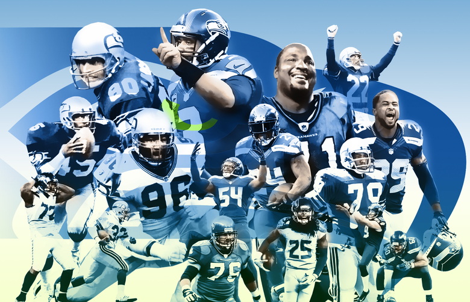
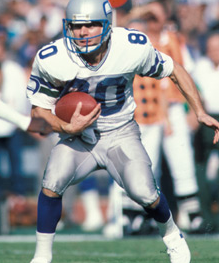
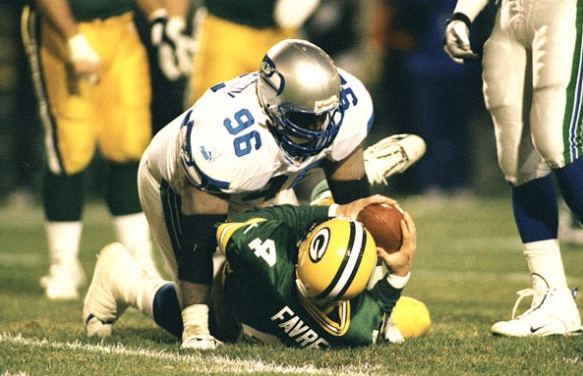
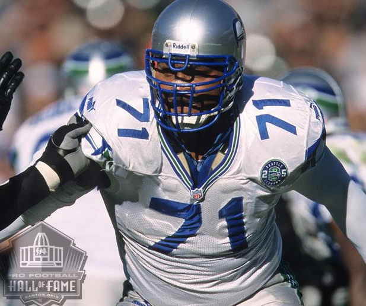

My favortie sports team is a American football team called the Seattle Seahawks. I like this team becasue I lived in seattle for 5 years and became a fan of them. They have been 3* NFC champions which means that they have been to the superbowl 3 times but have only won it once in the 2013-2014 season. My favorite player on the team is the Strong-Saftey named Kam Chancellor becasue he is a hard htting player. Also, their head coach is my favortie and his name is Pete Caroll. I like him becasue he is a good coach that lets the players be them selfs on the feild and practice feild. Also, this team is one of the best teams in the NFC which is short for the National Football Conference and have never missed the playoffs in the Pete Caroll era exept in 2011.


Steve Largent is the greatest seahawks Wide reciver ever. He has the 13,000 yards , 100 touchdowns and 819 receptions. Unlckily he had a poor quarterback, if he could've had a better one he could've been the best reciver in the league. He has been inducted into the pro football hall of fame

Cortez Kennedy is the best devesive linemen in seahawks history. He has 58 total quarterback sacks. He has 3 interceptions which is a lot for a devensive linemen. He has over 500 tackles. Unfourtunattley he is no longer alive and has died at the age of 48 back in may of 2017. He also, has been inducted into the pro football hall of fame.

Walter jones is the best offensive tackle from his time. He has been on the seahawks from 1997-2009. He has played 180 games and has started every single one of those games. He has recovered 3 fumbles which is not a too good stat but he has had some seasons by not letting up a sack. He is also a seahawk that has been put in the pro football hall of fame.